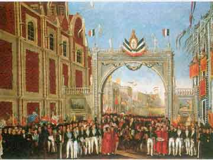
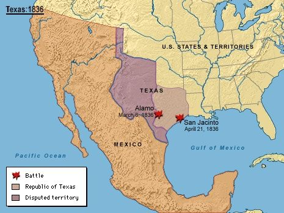
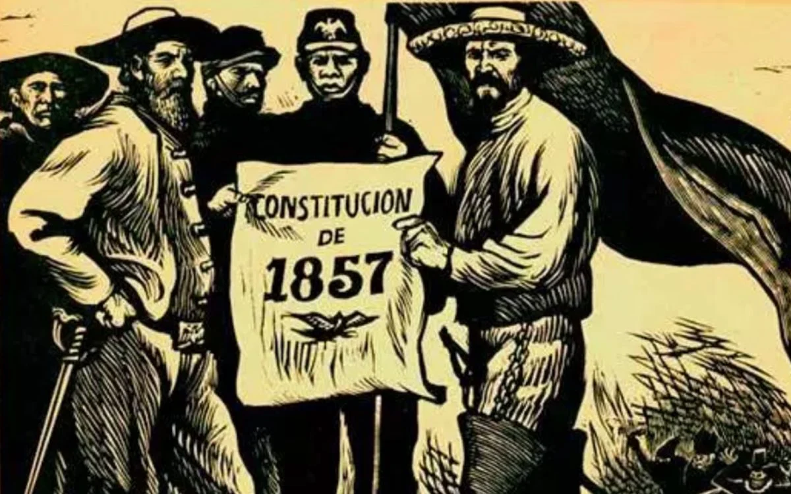
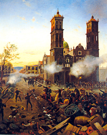
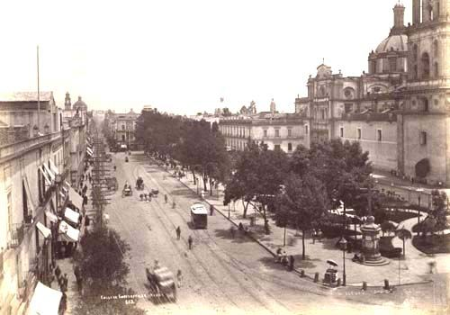
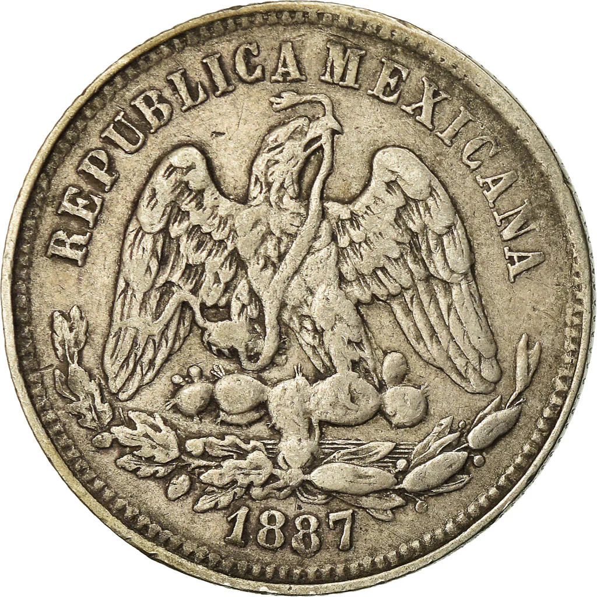
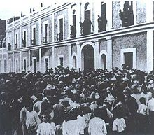

1827-1837
México entre 1827 y 1837: Un período de consolidación y desafíos
El periodo comprendido entre 1827 y 1837 en México fue un tiempo de consolidación
de la nación independiente, pero también estuvo marcado por diversos desafíos políticos,
económicos y sociales.
Consolidación de la República: Nuevas instituciones: Se consolidaron las instituciones republicanas, como el Congreso y la presidencia, aunque aún existían tensiones entre centralistas y federalistas sobre la forma de gobierno.
Constitución de 1824: La Constitución de 1824, de carácter federalista, se mantuvo como marco legal del país, aunque su aplicación no siempre fue uniforme en todo el territorio.
Desafíos Políticos:
Inestabilidad política: La joven nación mexicana enfrentó una serie de conflictos internos, como rebeliones y cambios de gobierno frecuentes, que obstaculizaron su desarrollo.
Centralismo vs. Federalismo: La disputa entre centralistas y federalistas continuó siendo una fuente de tensión y división política.
Desafíos Económicos:
Crisis económica: México sufrió una profunda crisis económica, agravada por la caída de los precios de los productos de exportación y la deuda externa contraída durante la guerra de independencia.
Problemas financieros: El gobierno enfrentó dificultades para recaudar impuestos y mantener el equilibrio fiscal.
Desafíos Sociales:
Desigualdad social: La desigualdad social persistía, con una gran concentración de la riqueza en manos de unos pocos.
Problemas indígenas: La situación de los pueblos indígenas seguía siendo precaria, con escaso reconocimiento de sus derechos y marginación social.
Avances Culturales:
Desarrollo de la educación: Se impulsó la educación, aunque de manera limitada y principalmente en las ciudades.
Desarrollo artístico: La literatura y las artes comenzaron a florecer, con la aparición de nuevos talentos y la difusión de ideas liberales.
1837-1847
México entre 1837 y 1847: Un período de inestabilidad y la sombra de la guerra
El período comprendido entre 1837 y 1847 en México fue una época marcada por una profunda inestabilidad política, económica y social. La joven nación, aún en proceso de consolidación tras su independencia, enfrentó una serie de desafíos internos y externos que la llevaron al borde del colapso.
Un panorama político convulso:
Gobiernos efímeros: La constante sucesión de presidentes y gobiernos, producto de pronunciamientos militares y conflictos internos, impidió la implementación de políticas públicas estables y a largo plazo.
Centralismo vs. Federalismo: La disputa entre los partidarios de un gobierno centralizado y aquellos que defendían un sistema federalista generó constantes tensiones y divisiones en el país.
Conflictos regionales: Diversas regiones de México, como Texas y Yucatán, manifestaron deseos de independencia o mayor autonomía, lo que exacerbó aún más la fragmentación política.
La crisis económica:
Dependencia económica: México seguía siendo altamente dependiente de la exportación de productos primarios, como la plata, lo que la volvía vulnerable a las fluctuaciones de los mercados internacionales.
Deuda externa: La acumulación de una considerable deuda externa, contraída durante la guerra de independencia, limitaba las posibilidades de inversión y desarrollo del país
Inflación y devaluación: La inestabilidad política y económica generó una fuerte inflación y la devaluación de la moneda, lo que afectó gravemente el poder adquisitivo de la población.
La guerra con Estados Unidos:
La anexión de Texas: La anexión de Texas por parte de Estados Unidos en 1845 desencadenó un conflicto armado entre ambos países.
La invasión estadounidense: Las tropas estadounidenses invadieron el territorio mexicano, ocupando importantes ciudades como Monterrey y la Ciudad de México.
El Tratado de Guadalupe Hidalgo: En 1848, México se vio obligado a firmar el Tratado de Guadalupe Hidalgo, por el cual cedió a Estados Unidos una vasta extensión de territorio, incluyendo lo que hoy son los estados de California, Nevada, Utah, Nuevo México, Arizona y partes de Colorado, Wyoming y Kansas.
Consecuencias a largo plazo:
La guerra con Estados Unidos tuvo consecuencias devastadoras para México, entre las que destacan:
Pérdida territorial: La pérdida de más de la mitad de su territorio debilitó significativamente a México y frenó su desarrollo económico.
Endeudamiento: El pago de las indemnizaciones establecidas en el Tratado de Guadalupe Hidalgo agravó aún más la situación financiera del país.
Resentimiento nacionalista: La guerra generó un profundo sentimiento de resentimiento y nacionalismo entre los mexicanos, que se manifestaría en diversas luchas sociales y políticas a lo largo del siglo XIX.
1847-1857
México entre 1847 y 1857: Un periodo de profundas transformaciones
El periodo comprendido entre 1847 y 1857 en México fue un tiempo de grandes convulsiones políticas, sociales y territoriales. La nación se encontraba en un proceso de consolidación tras su independencia, pero enfrentaba desafíos internos y externos que marcarían su rumbo.
La Guerra con Estados Unidos y sus consecuencias:
Uno de los eventos más significativos de este periodo fue la Guerra con Estados Unidos (1846-1848). México perdió una gran extensión de su territorio, incluyendo lo que hoy son los estados de California, Texas, Nuevo México, Arizona, Nevada, Utah y Colorado. Esta pérdida territorial generó un profundo sentimiento de resentimiento y nacionalismo en México.
La Segunda República Federal:
En este contexto, México vivió la Segunda República Federal (1847-1857). Este periodo se caracterizó por una gran inestabilidad política, con frecuentes cambios de gobierno y conflictos internos. La Constitución de 1847, producto de este periodo, intentó establecer un sistema federal, pero los conflictos entre los distintos estados y el gobierno central dificultaron su aplicación.
La Reforma Liberal:
Hacia finales de este periodo, se gestó un movimiento político y social conocido como la Reforma Liberal. Este movimiento, liderado por figuras como Benito Juárez, buscaba transformar radicalmente la sociedad mexicana. Los liberales proponían una separación entre la Iglesia y el Estado, la reducción del poder de la Iglesia, la modernización de la economía y la distribución más equitativa de la tierra.
Eventos clave de este periodo:
1857 -1867
México entre 1857 y 1867: Un periodo de profundas transformaciones y conflictos
El periodo comprendido entre 1857 y 1867 en México fue una época de grandes convulsiones políticas, sociales y económicas, marcada por la promulgación de una nueva Constitución, una guerra civil y una intervención extranjera.
La Constitución de 1857 y las Leyes de Reforma:
En 1857, México se dotó de una nueva Constitución, la cual representó un avance significativo en materia de libertades individuales y derechos ciudadanos. Esta carta magna establecía un Estado laico, separaba la Iglesia del Estado y limitaba el poder del clero.
Para llevar a cabo las reformas establecidas en la Constitución, se promulgaron las llamadas Leyes de Reforma, las cuales buscaban modernizar al país y reducir el poder de la Iglesia Católica, la cual había acumulado grandes riquezas y ejercía una gran influencia política. Estas leyes provocaron una fuerte oposición por parte de los conservadores, quienes defendían el orden establecido y los privilegios de la Iglesia
La Guerra de Reforma:
La promulgación de la Constitución y las Leyes de Reforma desencadenó una guerra civil conocida como la Guerra de Reforma (1858-1861). Los liberales, encabezados por Benito Juárez, defendían las reformas, mientras que los conservadores, apoyados por el clero y parte del ejército, buscaban restaurar el orden anterior.
Esta guerra civil dejó al país devastado y sumido en una profunda crisis económica. La victoria liberal consolidó las reformas y permitió a Benito Juárez llegar a la presidencia.
La Intervención Francesa:
Aprovechando la debilidad de México, Francia, España e Inglaterra intervinieron militarmente en el país en 1862. Sin embargo, los ingleses y los españoles se retiraron, dejando a los franceses solos en la ocupación.
Los franceses impusieron a Maximiliano de Habsburgo como emperador de México, dando inicio al Segundo Imperio Mexicano. Benito Juárez y los liberales se refugiaron en el norte del país y continuaron la lucha contra la intervención.
La República Restaurada:
Gracias al apoyo de los Estados Unidos y a la resistencia de los liberales, los franceses se vieron obligados a abandonar México en 1867. Maximiliano fue ejecutado y Benito Juárez regresó a la Ciudad de México, dando inicio al periodo conocido como la República Restaurada.
1867 -1877
México entre 1867 y 1877: La República Restaurada
El periodo comprendido entre 1867 y 1876 en México es conocido como la República Restaurada o República Triunfante. Esta etapa histórica se caracterizó por la consolidación del poder republicano tras la caída del Segundo Imperio Mexicano y la búsqueda de estabilidad política y económica.
Acontecimientos clave:
1867: Caída del Segundo Imperio: Con la captura y ejecución de Maximiliano de Habsburgo y la derrota de las fuerzas francesas, se puso fin al breve reinado imperial. Benito Juárez regresó al poder y comenzó la reconstrucción del país.
Reconstrucción Nacional: Los años posteriores a 1867 estuvieron marcados por la tarea de reconstruir las instituciones y la economía, fuertemente dañadas por la guerra. Se enfrentaron diversos desafíos como la deuda externa, la inestabilidad política y la desigualdad social.
Gobiernos de Juárez y Lerdo de Tejada: Benito Juárez gobernó hasta su muerte en 1872. Lo sucedió Sebastián Lerdo de Tejada, quien continuó con la política de consolidación del Estado liberal.
Conflictos internos: A pesar de los esfuerzos por restaurar la paz, México siguió experimentando conflictos internos entre los distintos grupos políticos y militares.
Inicio del Porfiriato: En 1876, Porfirio Díaz, quien había sido aliado de Juárez, se levantó en armas contra Lerdo de Tejada y llegó al poder. Con su llegada, se inició una nueva etapa en la historia de México, caracterizada por un largo periodo de estabilidad política pero también por una creciente concentración del poder y desigualdad social.
1877 -1887
México entre 1877 y 1887: La consolidación del Porfiriato
El período comprendido entre 1877 y 1887 marca una etapa crucial en la historia de México, caracterizada por la consolidación del poder de Porfirio Díaz y el inicio de su largo régimen conocido como Porfiriato. Durante estos diez años, se establecieron las bases de un modelo político, económico y social que transformaría profundamente al país.
Aspectos clave de este período:
Consolidación del poder de Porfirio Díaz: Tras la Revolución de Tuxtepec (1876), Porfirio Díaz asumió la presidencia y, a través de elecciones amañadas y el uso de la fuerza, se mantuvo en el poder durante casi tres décadas.
Estabilidad política: Uno de los principales logros de Díaz fue establecer un período de relativa estabilidad política, poniendo fin a las constantes revueltas y conflictos internos que habían caracterizado a México desde su independencia.
Modernización económica: Se impulsó una política económica basada en la inversión extranjera, la promoción de la industria y la construcción de infraestructura. Se construyeron ferrocarriles, se explotaron recursos naturales y se fomentó la agricultura de exportación.
Centralización del poder: El gobierno de Díaz se caracterizó por una fuerte centralización del poder, con un gobierno autoritario que limitaba las libertades civiles y políticas.
Desigualdad social: A pesar del crecimiento económico, la desigualdad social se acentuó, ya que los beneficios de la modernización se concentraron en un pequeño grupo de privilegiados.
Desarrollo cultural: Se impulsó el desarrollo cultural, con la creación de instituciones educativas y culturales, y el apoyo a artistas y escritores.
Consecuencias a largo plazo:
El período de 1877 a 1887 sentó las bases para el largo régimen de Porfirio Díaz, que tuvo consecuencias tanto positivas como negativas para México. Por un lado, se logró un crecimiento económico significativo y se modernizó el país, pero por otro lado, se consolidó un sistema político autoritario y se acentuaron las desigualdades sociales, lo que a la larga conduciría a la Revolución Mexicana.
1887 -1897
México entre 1887 y 1897: El Porfiriato en su apogeo
El periodo comprendido entre 1887 y 1897 fue una etapa de consolidación y auge para el régimen de Porfirio Díaz, conocido como el Porfiriato. Durante estos diez años, México experimentó una transformación profunda en diversos ámbitos, marcada por un crecimiento económico sostenido y una estabilidad política relativa.
Aspectos destacados de este periodo:
Consolidación del poder de Porfirio Díaz: Porfirio Díaz se afianzó en el poder, imponiendo un régimen autoritario que garantizaba la estabilidad política a costa de reprimir cualquier oposición.
Desarrollo económico: México vivió un periodo de crecimiento económico sin precedentes, impulsado por la inversión extranjera, la modernización de la infraestructura y la explotación de los recursos naturales.
Modernización: Se construyeron ferrocarriles, se impulsó la industria y se modernizaron las ciudades. Sin embargo, estos beneficios se concentraron en un pequeño sector de la población, dejando a la mayoría en condiciones de pobreza.
Estabilidad política: Durante este periodo se mantuvo una relativa estabilidad política, lo que permitió el desarrollo económico y la inversión extranjera.
Represión y autoritarismo: El régimen de Porfirio Díaz se caracterizó por la represión de las libertades civiles, la censura y la persecución de los opositores políticos.
1897-1907
México entre 1897 y 1907: Un período de transición y consolidación
El periodo comprendido entre 1897 y 1907 en México fue un tiempo de transición y consolidación marcado por diversos acontecimientos políticos, económicos y sociales.:
Aspectos políticos
Continuidad del Porfiriato: Porfirio Díaz continuó en el poder, consolidando su régimen a través de elecciones amañadas y el control de las instituciones.
Estabilidad política aparente: A pesar de algunas rebeliones menores, el país gozó de una relativa estabilidad política, lo que permitió el desarrollo de diversos proyectos.
Modernización del Estado: Se implementaron reformas administrativas y se fortaleció el aparato estatal, con el objetivo de centralizar el poder y modernizar el país.
Aspectos económicos
Desarrollo económico: Se impulsó el desarrollo económico basado en la exportación de materias primas, principalmente minerales y agrícolas.
Desigualdad social: A pesar del crecimiento económico, la desigualdad social se acentuó, ya que los beneficios del desarrollo se concentraron en un pequeño grupo de personas
Inversión extranjera: Se fomentó la inversión extranjera, lo que permitió la construcción de infraestructura y el desarrollo de nuevas industrias.
Aspectos sociales
Modernización urbana: Las principales ciudades del país experimentaron un proceso de modernización, con la construcción de nuevas infraestructuras y la llegada de servicios públicos.
Educación: Se impulsó la educación, aunque con un enfoque en la formación de técnicos y profesionales para atender las necesidades de la industria.
Migración interna: Se intensificó la migración del campo a la ciudad, en busca de mejores oportunidades laborales.
Acontecimientos relevantes
Construcción del Ferrocarril Central Mexicano: Esta obra de infraestructura permitió conectar las principales ciudades del país y facilitar el comercio.
Crisis económica de 1907: A finales de este periodo, México se vio afectado por la crisis económica mundial, lo que generó cierta inestabilidad económica y social.
1907 -1917
México entre 1907 y 1917: La antesala de la Revolución
El periodo comprendido entre 1907 y 1917 en México estuvo marcado por una creciente tensión social y política que culminaría en la Revolución Mexicana. Durante estos años, las profundas desigualdades económicas, la concentración del poder en pocas manos y la represión de las voces disidentes fueron socavando los cimientos del régimen porfirista.
La situación antes de la Revolución
Porfiriato: El gobierno de Porfirio Díaz, iniciado en 1876, había traído un periodo de estabilidad política y crecimiento económico, pero a costa de una gran desigualdad social.
Concentración de la tierra: Un pequeño grupo de hacendados poseía la mayor parte de las tierras cultivables, lo que generó un descontento generalizado entre los campesinos.
Explotación laboral: Las condiciones de trabajo en las fábricas y haciendas eran precarias, con largas jornadas y bajos salarios.
Represión política: Las voces críticas eran silenciadas y los opositores al régimen eran perseguidos y encarcelados.
Acontecimientos clave
1910: Elecciones fraudulentas y Plan de San Luis: La reelección de Porfirio Díaz en 1910, considerada fraudulenta, desencadenó la Revolución Mexicana. Francisco I. Madero, principal opositor, lanzó el Plan de San Luis, llamando a la insurrección armada.
Levantamiento armado: Diversos grupos armados, encabezados por figuras como Francisco Villa, Emiliano Zapata y Venustiano Carranza, se levantaron en armas contra el gobierno porfirista.
Caída de Porfirio Díaz: Ante la creciente presión, Porfirio Díaz se vio obligado a renunciar a la presidencia y exiliarse en Francia en 1911.
Lucha interna: Tras la caída de Díaz, los líderes revolucionarios entraron en conflicto entre sí, lo que prolongó la guerra civil.
Promulgación de la Constitución de 1917: En 1917, se promulgó la Constitución Política de los Estados Unidos Mexicanos, un documento fundamental que estableció un nuevo orden político y social para el país, reconociendo derechos laborales, agrarios y sociales.
Consecuencias de la Revolución
La Revolución Mexicana tuvo un profundo impacto en México, transformando radicalmente la sociedad y la política del país. Entre las principales consecuencias se pueden mencionar:
Derrocamiento del porfiriato: El régimen autoritario de Porfirio Díaz fue sustituido por un sistema político más democrático.
Reformas sociales: Se llevaron a cabo importantes reformas en materia agraria, laboral y educativa, mejorando las condiciones de vida de amplios sectores de la población.
Fortalecimiento del nacionalismo: La Revolución fomentó un fuerte sentimiento nacionalista y una mayor conciencia de la identidad mexicana.
Modernización del país: Impulsó la modernización del país en diversos ámbitos, como la industria y la infraestructura.
1917-1927
México entre 1917 y 1927: De la Revolución a la Consolidación
El periodo comprendido entre 1917 y 1927 en México fue un tiempo de profundas transformaciones políticas, sociales y económicas, marcado por la consolidación de la Revolución Mexicana.
La Promulgación de la Constitución de 1917
Un nuevo orden constitucional: La promulgación de la Constitución de 1917 marcó un hito en la historia de México, estableciendo un nuevo orden político y social. Este documento incluía reformas radicales en materia agraria, laboral, religiosa y educativa.
Principios revolucionarios: La Constitución plasmó los ideales de la Revolución Mexicana, como la justicia social, la soberanía popular y la división de poderes.
La Lucha por el Poder y la Consolidación del Estado
Conflictos internos: Tras la promulgación de la Constitución, México vivió un periodo de inestabilidad política marcado por luchas entre los distintos caudillos revolucionarios.
Emergencia de nuevos líderes: Figuras como Álvaro Obregón y Plutarco Elías Calles destacaron en este periodo, consolidando sus posiciones políticas y militares.
Transformaciones Sociales y Económicas
Reforma agraria: Se implementaron políticas de reparto de tierras a los campesinos, lo que generó tensiones sociales y conflictos agrarios.
Desarrollo industrial: Se impulsó la industrialización, aunque de manera incipiente, y se fomentó el desarrollo de la infraestructura.
Educación y cultura: Se realizaron importantes inversiones en educación y se promovieron las expresiones culturales populares.
Legado del Periodo
Bases para la modernización: Los años entre 1917 y 1927 sentaron las bases para la modernización de México, aunque los desafíos sociales y económicos persistieron.
Fortalecimiento del Estado: Se consolidó el Estado mexicano como una institución central en la vida política y social del país.
Décadas de transformación: Este periodo marcó el inicio de décadas de profundas transformaciones en México, que aún hoy en día tienen un impacto significativo.